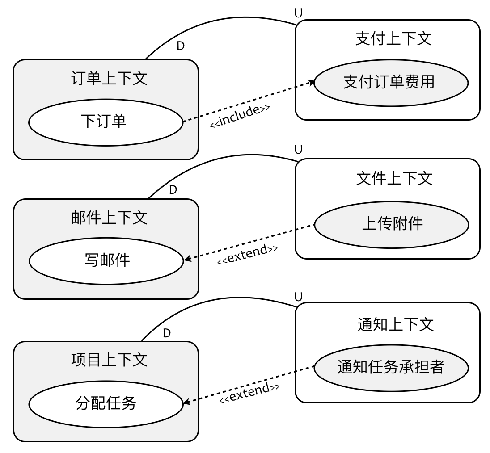

- 001 「战略篇」访谈 DDD 和微服务是什么关系？.md.html
- 002 「战略篇」开篇词：领域驱动设计，重焕青春的设计经典.md.html
- 003 领域驱动设计概览.md.html
- 004 深入分析软件的复杂度.md.html
- 005 控制软件复杂度的原则.md.html
- 006 领域驱动设计对软件复杂度的应对（上）.md.html
- 007 领域驱动设计对软件复杂度的应对（下）.md.html
- 008 软件开发团队的沟通与协作.md.html
- 009 运用领域场景分析提炼领域知识（上）.md.html
- 010 运用领域场景分析提炼领域知识（下）.md.html
- 011 建立统一语言.md.html
- 012 理解限界上下文.md.html
- 013 限界上下文的控制力（上）.md.html
- 014 限界上下文的控制力（下）.md.html
- 015 识别限界上下文（上）.md.html
- 016 识别限界上下文（下）.md.html
- 017 理解上下文映射.md.html
- 018 上下文映射的团队协作模式.md.html
- 019 上下文映射的通信集成模式.md.html
- 020 辨别限界上下文的协作关系（上）.md.html
- 021 辨别限界上下文的协作关系（下）.md.html
- 022 认识分层架构.md.html
- 023 分层架构的演化.md.html
- 024 领域驱动架构的演进.md.html
- 025 案例 层次的职责与协作关系（图文篇）.md.html
- 026 限界上下文与架构.md.html
- 027 限界上下文对架构的影响.md.html
- 028 领域驱动设计的代码模型.md.html
- 029 代码模型的架构决策.md.html
- 030 实践 先启阶段的需求分析.md.html
- 031 实践 先启阶段的领域场景分析（上）.md.html
- 032 实践 先启阶段的领域场景分析（下）.md.html
- 033 实践 识别限界上下文.md.html
- 034 实践 确定限界上下文的协作关系.md.html
- 035 实践 EAS 的整体架构.md.html
- 036 「战术篇」访谈：DDD 能帮开发团队提高设计水平吗？.md.html
- 037 「战术篇」开篇词：领域驱动设计的不确定性.md.html
- 038 什么是模型.md.html
- 039 数据分析模型.md.html
- 040 数据设计模型.md.html
- 041 数据模型与对象模型.md.html
- 042 数据实现模型.md.html
- 043 案例 培训管理系统.md.html
- 044 服务资源模型.md.html
- 045 服务行为模型.md.html
- 046 服务设计模型.md.html
- 047 领域模型驱动设计.md.html
- 048 领域实现模型.md.html
- 049 理解领域模型.md.html
- 050 领域模型与结构范式.md.html
- 051 领域模型与对象范式（上）.md.html
- 052 领域模型与对象范式（中）.md.html
- 053 领域模型与对象范式（下）.md.html
- 054 领域模型与函数范式.md.html
- 055 领域驱动分层架构与对象模型.md.html
- 056 统一语言与领域分析模型.md.html
- 057 精炼领域分析模型.md.html
- 058 彩色 UML 与彩色建模.md.html
- 059 四色建模法.md.html
- 060 案例 订单核心流程的四色建模.md.html
- 061 事件风暴与业务全景探索.md.html
- 062 事件风暴与领域分析建模.md.html
- 063 案例 订单核心流程的事件风暴.md.html
- 064 表达领域设计模型.md.html
- 065 实体.md.html
- 066 值对象.md.html
- 067 对象图与聚合.md.html
- 068 聚合设计原则.md.html
- 069 聚合之间的关系.md.html
- 070 聚合的设计过程.md.html
- 071 案例 培训领域模型的聚合设计.md.html
- 072 领域模型对象的生命周期-工厂.md.html
- 073 领域模型对象的生命周期-资源库.md.html
- 074 领域服务.md.html
- 075 案例 领域设计模型的价值.md.html
- 076 应用服务.md.html
- 077 场景的设计驱动力.md.html
- 078 案例 薪资管理系统的场景驱动设计.md.html
- 079 场景驱动设计与 DCI 模式.md.html
- 080 领域事件.md.html
- 081 发布者—订阅者模式.md.html
- 082 事件溯源模式.md.html
- 083 测试优先的领域实现建模.md.html
- 084 深入理解简单设计.md.html
- 085 案例 薪资管理系统的测试驱动开发（上）.md.html
- 086 案例 薪资管理系统的测试驱动开发（下）.md.html
- 087 对象关系映射（上）.md.html
- 088 对象关系映射（下）.md.html
- 089 领域模型与数据模型.md.html
- 090 领域驱动设计对持久化的影响.md.html
- 091 领域驱动设计体系.md.html
- 092 子领域与限界上下文.md.html
- 093 限界上下文的边界与协作.md.html
- 094 限界上下文之间的分布式通信.md.html
- 095 命令查询职责分离.md.html
- 096 分布式柔性事务.md.html
- 097 设计概念的统一语言.md.html
- 098 模型对象.md.html
- 099 领域驱动设计参考过程模型.md.html
- 100 领域驱动设计的精髓.md.html
- 101 实践 员工上下文的领域建模.md.html
- 102 实践 考勤上下文的领域建模.md.html
- 103 实践 项目上下文的领域建模.md.html
- 104 实践 培训上下文的业务需求.md.html
- 105 实践 培训上下文的领域分析建模.md.html
- 106 实践 培训上下文的领域设计建模.md.html
- 107 实践 培训上下文的领域实现建模.md.html
- 108 实践 EAS 系统的代码模型.md.html
- 109 后记：如何学习领域驱动设计.md.html
017 理解上下文映射
一个软件系统通常被分为多个限界上下文，这是运用“分而治之”思想来降低业务复杂度的有效手段，设计的难题往往会停留在“如何分”，然而限界上下文之间的“怎么合”问题同样值得关注，分与合遵循的还是软件设计的最高原则——高内聚、松耦合。分是合的基础，基于内聚相关度进行合理的分配，可以在一定程度减少限界上下文之间不必要的关联。假设分配是合理的，则接下来的“合”就是要尽可能地降低彼此之间的耦合。
既然前面提及限界上下文的识别是一个迭代过程，当我们在思考限界上下文该如何协作时，倘若发现协作总有不合理之处，就可能会是一个“设计坏味道”的信号，它告诉我们：之前识别的限界上下文或有不妥，由是可以审视之前的设计，进而演进为更为准确的限界上下文划分。即使抛开对设计的促进作用，思考限界上下文是如何协作的，仍然格外重要，我们既要小心翼翼地维护限界上下文的边界，又需要它们彼此之间良好的协作，并思考协作的具体实现方式，这个思考过程既牵涉到逻辑架构层面，又与物理架构有关，足以引起我们的重视。
领域驱动设计通过上下文映射（Context Map） 来讨论限界上下文之间的协作问题，上下文映射是一种设计手段，Eric Evans 总结了诸如共享内核（Shared Kernel）、防腐层（Anticorruption Layer）、开放主机服务（Open Host Service）等多种模式。由于上下文映射本质上是与限界上下文一脉相承的，因此要掌握这些协作模式，应该从限界上下文的角度进行理解，着眼点还是在于“边界”。领域驱动设计认为：上下文映射是用于将限界上下文边界变得更清晰的重要工具。所以当我们正在为一些限界上下文的边界划分而左右为难时，不妨先放一放，在定下初步的限界上下文后，通过绘制上下文映射来检验，或许会有意外收获。
限界上下文的一个核心价值，就是利用边界来约束不同上下文的领域模型，以保证模型的一致性。然而，每个限界上下文都不是独立存在的，多数时候，都需要多个限界上下文通力协作，才能完成一个完整的用例场景。例如，客户之于商品、商品之于订单、订单之于支付，贯穿起来才能完成“购买商品”的核心流程。
两个限界上下文之间的关系是有方向的，领域驱动设计使用两个专门的术语来表述它们：“上游（Upstream）”和“下游（Downstream）”，在上下文映射图中，以 U 代表上游，D 代表下游，理解它们之间的关系，正如理解该术语隐喻的河流，自然是上游产生的变化会影响到下游，反之则不然。故而从上游到下游的关系方向，代表了影响产生的作用力，影响作用力的方向与程序员惯常理解的依赖方向恰恰相反，上游影响了下游，意味着下游依赖于上游。
在划分限界上下文的业务边界时，我们常常从“语义相关性”与“功能相关性”两个角度去判别职责划分的合理性。在上下文映射中，我发现之所以两个业务边界的限界上下文能产生上下游协作关系，皆源于二者的功能相关性，这种功能相关存在主次之分，往往是上游限界上下文作为下游限界上下文的功能支撑，这就意味着在当前的协作关系下，下游限界上下文中的用例才是核心领域。例如，订单与支付，下订单用例才是核心功能，支付功能作为支撑的公开服务而被调用；例如，邮件与文件共享，写邮件用例才是核心功能，上传附件作为支撑的公开服务而被调用；例如，项目管理与通知，分配任务用例才是核心功能，通知功能作为支撑的公开服务而被调用。巧的是，这种主次功能的调用关系，几乎对应的就是用例图中的包含用例或扩展用例。

如果我们通过用例图来帮助识别限界上下文，那么，用例图中的包含用例或扩展用例或许是一个不错的判断上下文协作关系的切入点。选择从包含或扩展关系切入，既可能确定了职责分离的逻辑边界，又可以确定协作关系的方向，这就是用例对领域驱动设计的价值所在了。
那么，如何将上下文映射运用到领域驱动的战略设计阶段？Eric Evans 为我们总结了常用的上下文映射模式。为了更好地理解这些模式，结合限界上下文对边界的控制力，再根据这些模式的本质，我将这些上下文映射模式分为了两大类：团队协作模式与通信集成模式。前者对应的其实是团队合作的工作边界，后者则从应用边界的角度分析了限界上下文之间应该如何进行通信才能提升设计质量。针对通信集成模式，结合领域驱动设计社区的技术发展，在原有上下文映射模式基础上，增加了发布/订阅事件模式。